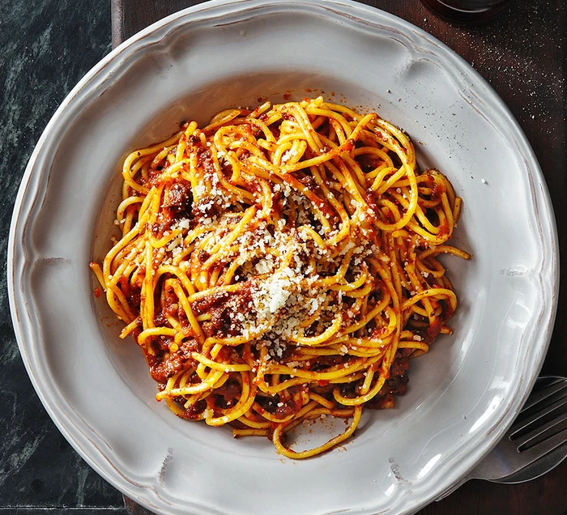

Spaghetti Bolognese
A classic Italian pasta dish with rich, meaty sauce.
The Recipe
Author: Solomon Nnajieze
Recipe Details
Prep Time: 15 minutes
Cook Time: 30 minutes
Servings: 4 people
Difficulty: Easy
Dish Preview

Ingredients
- 200g spaghetti
- 300g minced beef
- 1 onion (chopped)
- 2 cloves garlic (minced)
- 400g canned tomatoes
- 2 tbsp olive oil
- Salt and pepper to taste
Instructions
- Boil water and cook the spaghetti according to package instructions.
- Heat olive oil in a pan and sauté onions and garlic.
- Add minced beef and cook until browned.
- Pour in canned tomatoes and let simmer for 15 minutes.
- Season with salt and pepper, then serve over spaghetti.
Tips
For extra flavor, add a pinch of dried herbs like oregano or basil.
Nutrition Facts (Per Serving)
Calories: 450 kcal
Protein: 25g
Carbohydrates: 50g